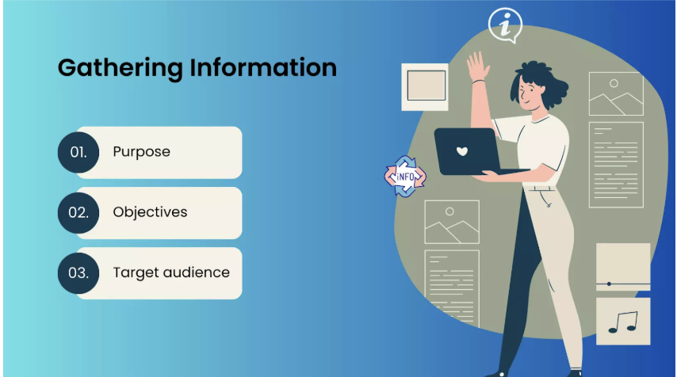

Home Page
This is the intial stage of the web development cycle. Usually it contains the table of contents. The home page also introduces different things regarding the stages of the web development cycle. If this page isnt displayed, then the sites purpose will remain unclear.
Information Gathering
This is the first part of the web development cycle. It involves gathering information about the project scope, planning, and layout. It also requires a good understanding of design/usability rules, requirements, and or objectives/goals.
Strategy
This is the stage where you look into the purpose of your website. There should be specific business goals, plans, tech requirements, site navigation,and website content. You basically need to see what the whole website is about, and use your skills.
Content Writing/Assembly
This is where you write or talk about the content present in your website. You typically explain what it does,its purpose, and the images. The assembly is where you use various languages or codes to create or change your website. It's a type of binary code.
Design
This is the stage where you have to add layouts, colors, textures and other elements to your website/project. Its where you start planning out your website to see what it would look like. The design phase is crucial since the project needs to have most text added.
Development
The development stage is where you actually start coding. You use HTML,CSS, and or Javascript. Its where you start the actual process of developing the site.
Testing
This is the process of testing your site making sure everything runs well/correctly. The testing phase is very important; it shows if your website works. If the testing process doesnt go the way you expect then something is wrong with the code/site.
Launch
The launch phase is where you run everything on the site. This will show you whats going on, making sure everything is doing what its supposed to.It is also when you run the code so that it makes the functions appear.
Maintenance
This is the phase where you fix or work on the site if something went wrong. It's where you need to change the code or reset things. Not doing the maintenance phase could mean that your website will not work efficiently.